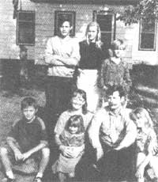
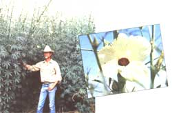

BITS AND PIECES
Protect your wrists and forearms from an angry hen's pecking beak.
In Search of a Laid-back Lifestyle
If you read the classified section of MOTHER'S April/May 1993 issue, you probably noticed an unusual request. The community of Wessington, South Dakota, was looking for a family.
Specifically, they wanted a "motivated" family seeking a "child oriented community."
What Wessington got were 40 to 50 responses. Seems many people are looking for a quick escape from hectic urban life. But Kathy and Ed Abbey of southern California were motivated enough to get there first-and they had their reasons. They were tired of fearing drive-by shootings and witnessing sidewalk drug deals; they longed for a laid-back lifestyle where their six children would be safe.
So they called the phone number listed in MOTHER, which turned out to be the local high school, and spoke with Naomi Reinhardt, a volunteer on the town development committee. She explained the town's motivation: residents were fighting to keep the local school open. To receive allocated state funds, enrollment needs to be at least 35 children. That wasn't a problem until the superintendent of the school moved away at the end of the school year, taking his children-who were students-with him.
In return for more students, Wessington could provide a friendly, safe community. Naomi spent a good deal of time on the phone with the Abbeys and then sent them a 15-minute video of their potential house and a tour of Wessington. According to the Abbeys, it was no slick film footage-just your average person's drive around town. For Ed and Kathy it was love at first sight. They paid off their bills, withdrew their retirements, packed up the car, and took off for South Dakota. When they got there, three weeks later, they found a pleasant surprise.
"When our son saw the video, he wasn't crazy about the house's green paint. He told Naomi that over the phone," says Ed. "Well, when we got to Wessington it was no longer green. A bunch of people from town had voluntarily painted it white with black shutters. They even painted the inside of the house."
The Abbeys enrolled two of their kids in the local high school, thereby preventing it from shutting down. "We're no heroes," says Ed. "These people are incredibly resourceful and weren't about to let their town die."
Their biggest challenge so far was finding work. Kathy and Ed-who were both elementary school teachers in California-could find no teaching positions to fill in Wessington. Kathy decided to try something new: she opened a cake-decorating/catering service. Ed is currently working as a sales associate at a department store. But he misses "putting a finger on a child's future" and hopes to get back to teaching.
The best things about their move: no concrete sidewalks, no locks on doors, and only a few properties with fences ("and those are just to protect their young children or animals"). Ed still can't get over the
fact that his phone and cable were installed in his house the very same day that he called for service. Or that the post office delivered him a letter addressed only with his last name and the name of the town. Or that his four-bedroom house cost only $10,000.
"A lot of people have heard about us and they send us postcards saying that they wish they had the courage to make the move and that it's really hard for them. When we respond, we write the same thing on all of the postcards: `Just do it."'
We all know that paper doesn't grow on trees. Well, not literally anyway. But finally we're starting to turn to another source-one that's been waiting to be discovered for the past 4,000 years. It's called kenaf, or officially, African Hibiscus cannabinus, and it's just starting to get the attention it deserves.
The U.S. Department of Agriculture has researched over 500 plants for their fiber qualities and chose kenaf as the most viable fiber plant. It's a rapid grower, producing six to 10 tons of raw fiber per acre per year. Paper is made from its stalk, which is hardy and relatively safe from pests. Kenaf also contains less lignin, the cementing material that holds the bonds of plants together. For paper manufacturers this means using less chemicals to break down plant bonds. For us, it means less pollutants in our water.
As for appearance, the differences between tree paper and kenaf paper are surprisingly subtle. While kenaf is naturally whiter in color, the manufactured sheets are slightly darker. This is because manufacturers have substituted hydrogen peroxide for toxic chlorine bleach in the bleaching process. Again, this means cleaner water for us.
Says Tom Rymsza, president of KP Products Inc., the first company to commercialize the paper in the United States, alternative paper products like kenaf are the future of papermaking.
For more information write: KP products incorporated, P.O. Box 4795, Albuquerque, NM 87196.
It's called the Pekker Protector and it brings hope for the henpecked. The patented product has captured the interest of chicken farmers across the country. It's a fingerless leather glove that shields the forearm and back of the hand from pecking beaks while leaving the palm and fingers free for gathering eggs.
Twenty-four-year-old Brenna Goss of Weed, New Mexico, first hatched the idea for Pekker Protectors after visiting a chicken farm run by her husband's aunt and uncle in Hindsville, Arkansas. While helping with the daily egg gathering there, she soon discovered the kind of hurt an angry hen's beak can inflict on a person's arm. Goss returned home determined to do something to help her relatives.
The answer turned out to be a glove. The first one that she designed was too stiff, the second chafed the wrist, the third left the thumb uncovered-but the fourth glove was just right. Loops for the thumb, forefinger, and pinkie hold it in place, while Velcro along the forearm and on a wrist strap make it easy to put on. Goss sews the gloves on an old Singer sewing machine in her home, and with the help of her mother she is able to keep production up to 30 a day.
Soon after inventing the protector, Goss sold a batch of her gloves to Tyson Foods in Springdale, Arkansas, the largest poultry processor in the world. "They're very popular with our folks," says Tyson spokesman Archie Schaffer. Plenty of people seem to agree that Goss's gloves are a big improvement over making do with Ace bandages or rubber gloves with the fingers cut out. In less than three years, she has sold more than 2,500 of them.
Word of the gloves has spread, and Goss has recently taken orders from breeders of turkeys and ostriches, not to mention "one lady from California with a pet iguana that was scratching her arm."
Pekker Protectors are sold singly for the right or left hand, in sizes small, medium, large, and extra large. The cost is $10.95, shipping included. T-shirts with the logo sell for $13.50 for sizes L and XL, and $15.50 for sizes XXL and XXXL. For more information call (505) 207-7711, or write PO. Box 475, Weed, NM 88354.
-Linda Wasmer Smith
Albuquerque, New Mexico Editor's Note: Do you have any interesting, timely, or peculiar news items you would like to share? Please send them to "Bits & Pieces" c/o Mother Earth News, P.O. Box 129, Arden, NC 28794.
|
 |
 |
|